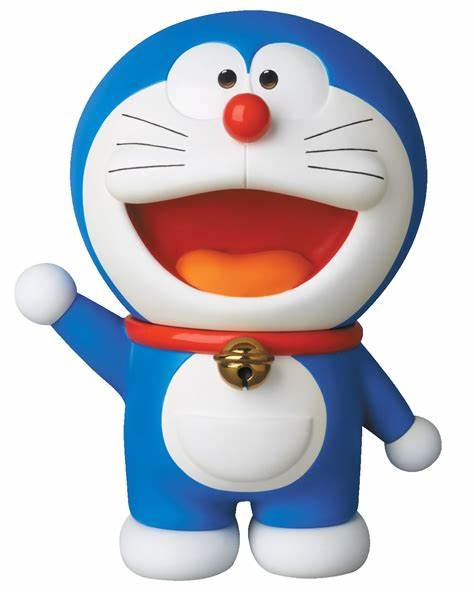
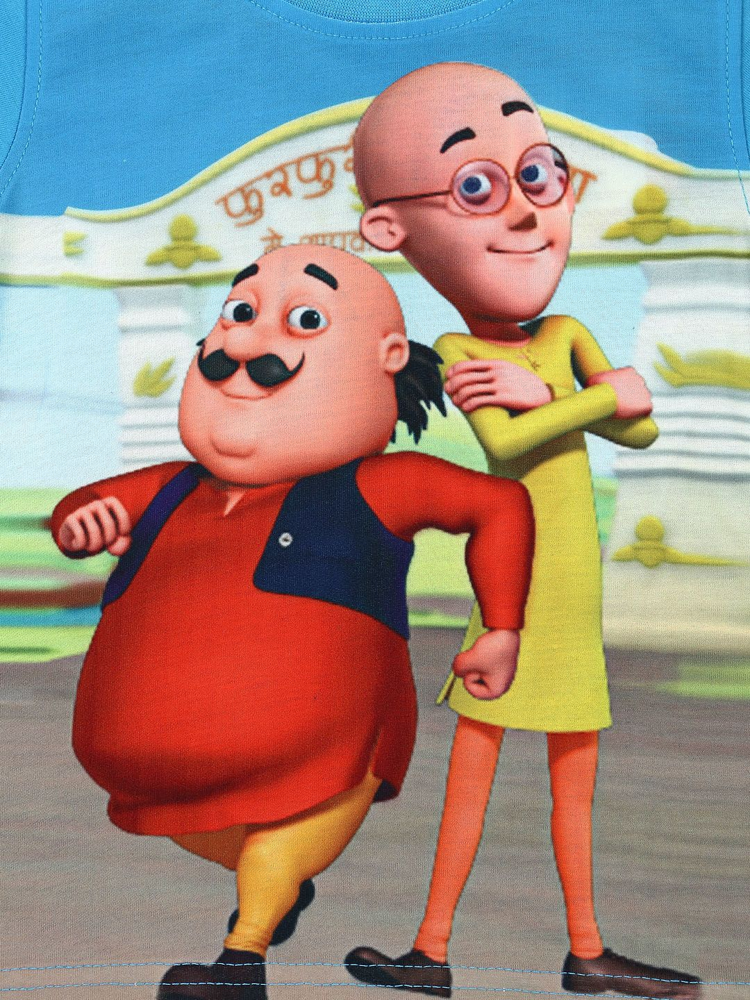
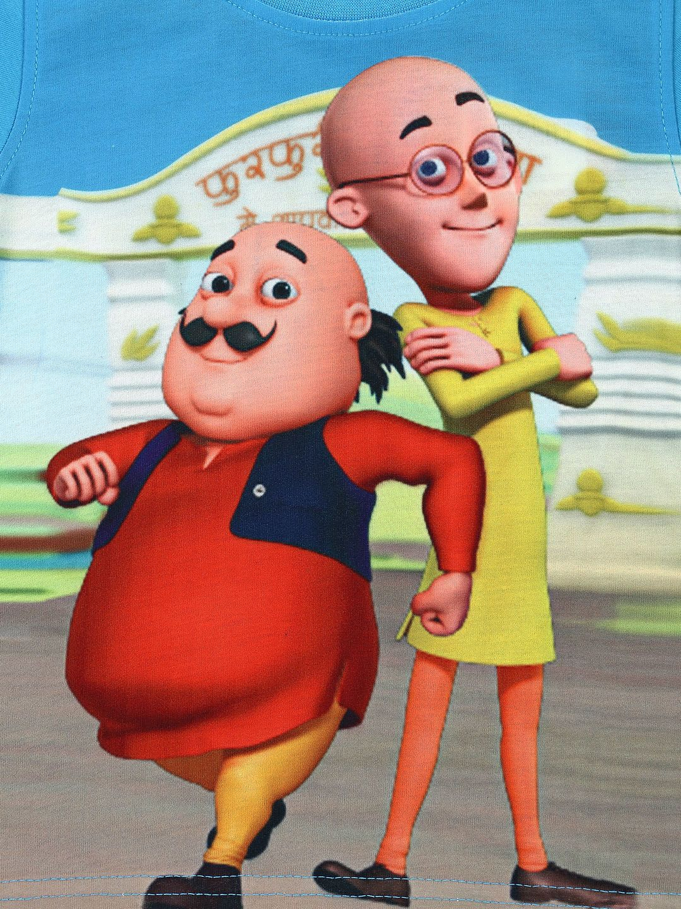

Amrutha
Doraemon: A cat-like robot from the 22nd century. After being asked to by Sewashi Nobi, Doraemon came to the present to help Nobita. Doraemon has a four-dimensional pocket which holds many gadgets. He loves the Japanese traditional pastry Dorayaki, and has a strong fear of mice
Tom and Jerry are two different characters of the cartoon. Tom is a cat and Jerry is a mouse. Jerry is always in trouble of Tom but in the end, Jerry creates lots of troublesome situation to Tom cat. An unsuccessful attempt by Tom to catch Jerry made a laugh on my face and would always be an interesting show ever.

 

 click here
click here